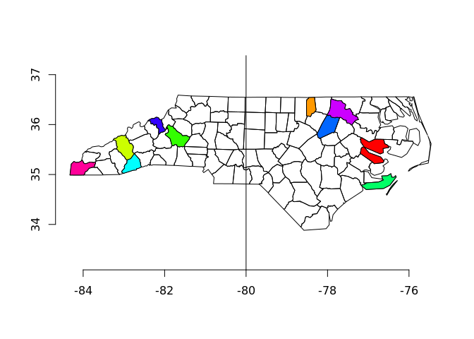

The goal of basf is to smooth over some of the peculiarities of the sf package, with a very short list of features.
From CRAN in the usual way.
install.packages("basf")From Github:
#install.packages("remotes")
remotes::install_github("mdsumner/basf")Use library(basf) instead of library(sf) if you want these features.
There will be a warning when basf starts up because this is what it does.
This example shows the impact of basf on plotting.
library(basf)
## all the stuff is available
x <- read_sf(system.file("shape/nc.shp", package="sf"))
## all we've changed is the plot command
plot(x)
plot(x[sample(1:nrow(x), 10), ], col = rainbow(10), add = TRUE)
## overplotting works
axis(1); axis(2)
abline(v = -80, h = -34)
Without basf, we would have to do extra format-aware workarounds when setting up the plot. I find this incredibly disruptive, perhaps because I’ve used R and sp for so long - I use plotting every day to verify my work. It makes no sense to me to make things format-specific so I’m kind of mystified as to why it’s gone this way.
This example shows the impact of basf on reading. We would otherwise obtain 32 polygons from this file.
The second optional argument ext can be an extent, either a raw vector xmin,xmax,ymin,ymax as here or a spatial object.
library(basf)
read_ext("../measoshapes/inst/extdata/measo_regions_ll.gpkg", c(100, 120, -80, -10))
Simple feature collection with 8 features and 3 fields
geometry type: POLYGON
dimension: XY
bbox: xmin: 30 ymin: -80 xmax: 170 ymax: -30
geographic CRS: WGS 84Please note that this project is released with a Contributor Code of Conduct. By participating in this project you agree to abide by its terms.